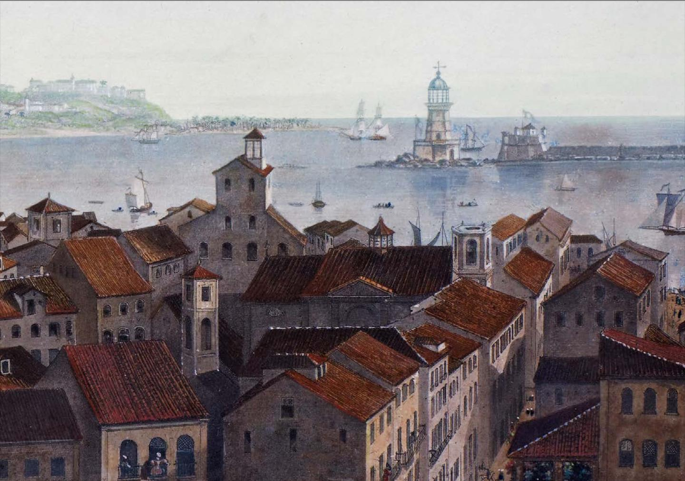
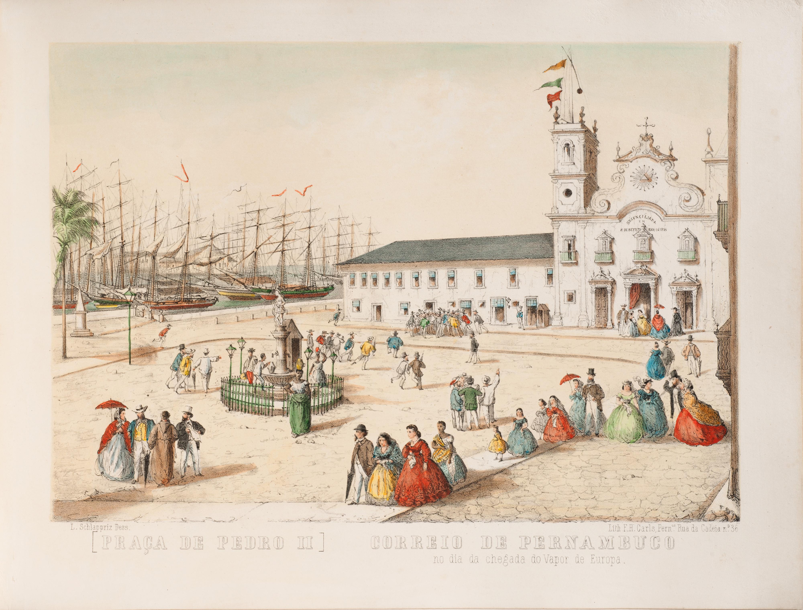
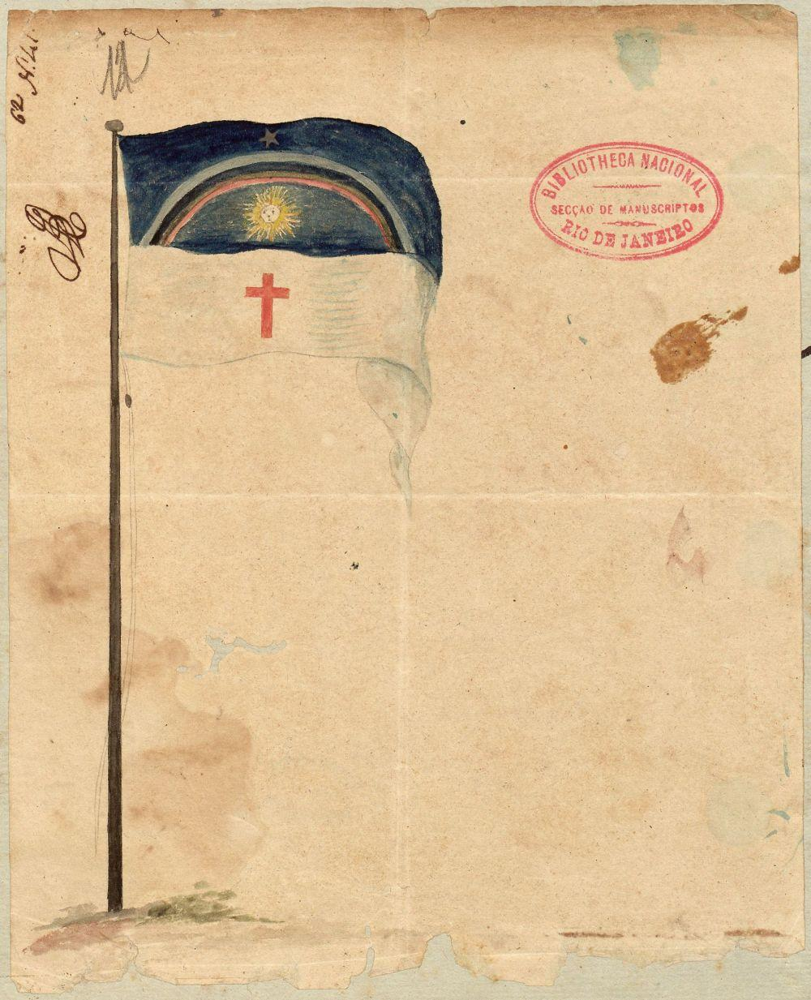
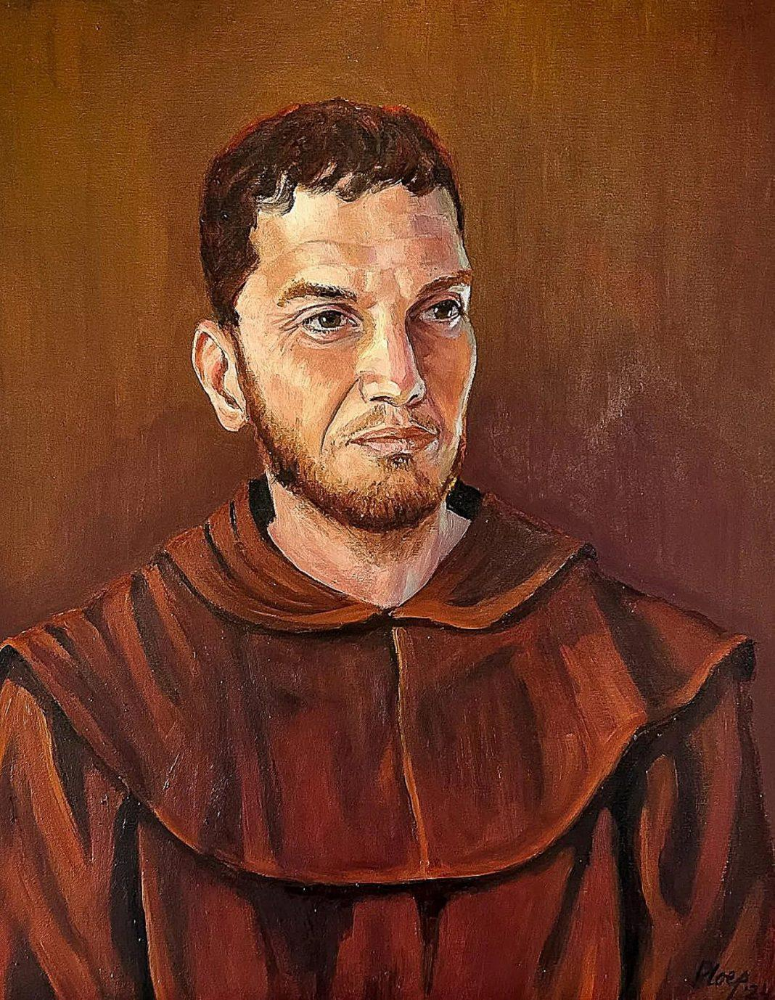

O Primeiro País em Solo Brasileiro
Pernambuco já teve uma república antes da Independência do Brasil? Sim! A República de Pernambuco (1817): O Dia em que o Nordeste Declarou Independência Muito antes de Dom Pedro I, Pernambuco protagonizou um episódio histórico extraordinário: a Revolução Pernambucana de 1817. Em 6 de março de 1817, insatisfeitos com a alta carga tributária imposta pela Coroa portuguesa (que sediava o governo no Rio de Janeiro) e com a seca rigorosa que castigava a região, militares, padres, comerciantes e intelectuais se rebelaram e tomaram o poder em Recife.
“Viva a Pátria, morra a tirania!”

PERNAMBUCO JÁ TEVE UMA REPÚBLICA ANTES DO BRASIL?
Descubra a revolução que começou em 1817.

Avante, Patriotas! 200 Anos da Revolução Pernambucana
No início do século XIX, Pernambuco enfrentava dificuldades econômicas, impostos elevados e os efeitos de uma forte seca. A chegada da Corte portuguesa ao Rio de Janeiro também aumentou as tensões políticas e fiscais.

Uma república foi instalada!
Os revolucionários organizaram um governo provisório e defenderam ideias republicanas. A experiência rompeu temporariamente os vínculos políticos com a Coroa portuguesa.

Ideias à frente do tempo
Liberdade e novas regras políticas.
O movimento defendia mudanças no governo e princípios como republicanismo, liberdade de consciência e tolerância religiosa. Atenção: isso não significava igualdade plena para toda a população.